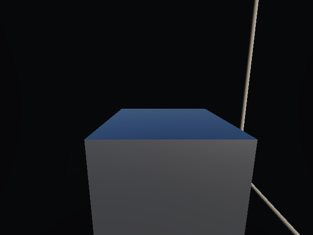
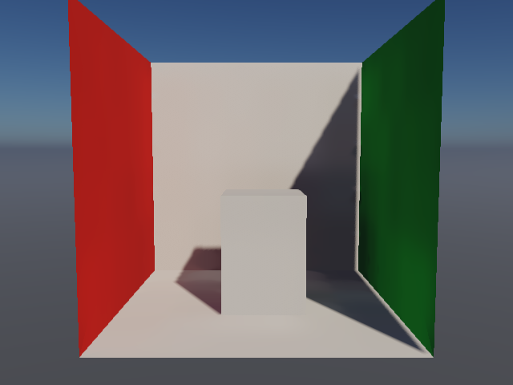
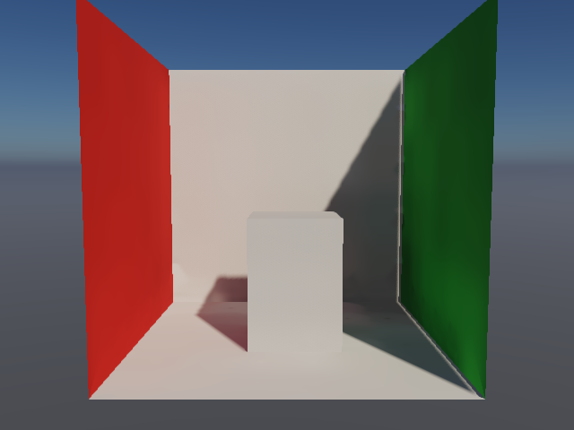
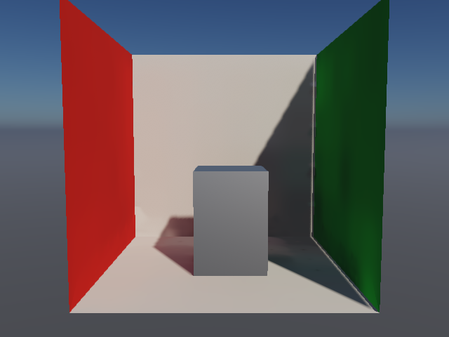
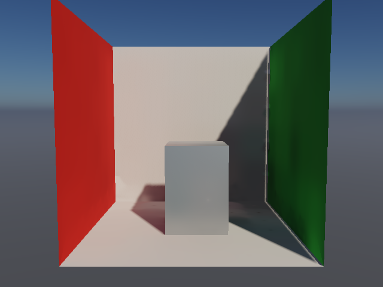
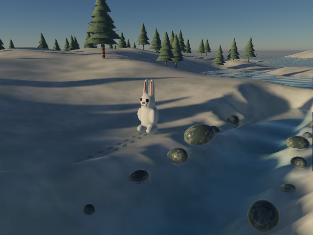
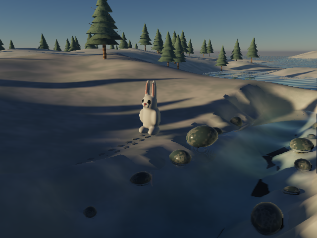

Light now respects the room.
Local reflected surroundings, two static diffuse bounces and compiler visibility are implemented. The enclosed-room failures are fixed. World GI still misses its quality and performance gate.
Implementation and limits · Measurements and provenance · Original nature / AAA audit
Same metal. Same camera. Same exposure.

99.56% less brightness on the sealed metal face
Mean scene-linear luminance falls from 0.060632 to 0.000267. A room with opaque walls and no internal light should be dark.
Disabling direct sunlight changes no RGB samples in the upgraded sealed image: the reproduced sun seams are removed.
Open spaces retain bounce

Earlier static GI
One geometry bounce, original probe placement and global sky reflections.

Upgraded static GI
Two bounces, bounded probe relocation and shared local context. This combined comparison does not isolate an individual feature.
The same metal, with local surroundings
Both frames use the same upgraded diffuse transport. Only the reflection context changes. The block has roughness 0.35, with identical exposure and lighting.

Global sky control
The metal responds to the outdoor sky without its local room context.

Local reflection context
The broad reflected light responds to geometry and visible sky. The result is intentionally low frequency; a detailed reflected room needs a richer representation.
Other material corrections
Environment clearcoat now reduces the underlying response. Spectrum water obeys local-light range and shadows. Glass uses local context for its existing approximation; it still does not show arbitrary objects behind it.
World GI remains opt-in

GI off · current default
Whole-frame median 2.818 ms in the matched trial.

Upgraded GI · preview
Median 19.726 ms; p95 22.938 ms. Build 10.002 seconds. Dark coverage and terrain/water bands remain.
Where the compiler helps — and where it does not yet
| Matched comparison | Compiled | Control | Result |
|---|---|---|---|
| Open-box diffuse pass vs full hierarchy | 3.015 ms | 3.867 ms | 22% lower median; identical pixels |
| Rock/ground diffuse pass vs full hierarchy | 2.949 ms | 4.915 ms | 40% lower median; identical pixels |
| Winter regions vs coarse cell lists | 20.316 ms | 20.120 ms | No measured improvement; identical pixels |
Apple / Metal, 640×480. Small scenes: isolated diffuse pass, 16 samples per condition in ABCCBA order. Winter: whole frame, 32 samples per condition in ABBA order. Noisy short runs; no cross-hardware claim. Small-scene savings include the cell lists implemented before this upgrade.
Deeper trees and larger candidate lists were rejected. The optional surface-restricted tree experiment produced inconsistent gains and stays disabled by default. Uncertain visibility always retains actual triangle tests.